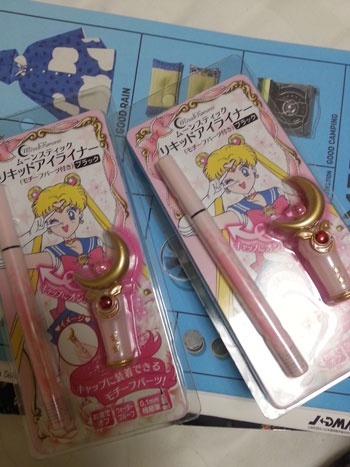
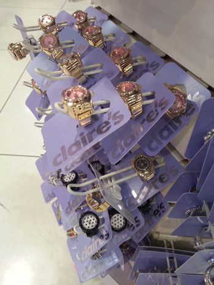
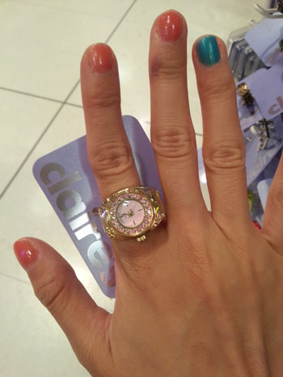
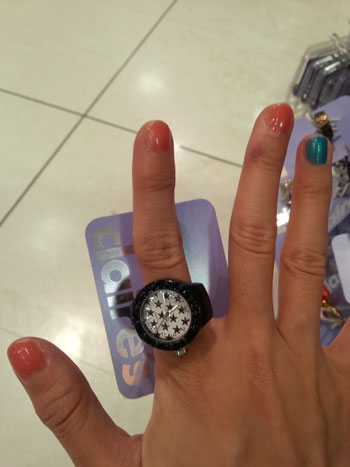
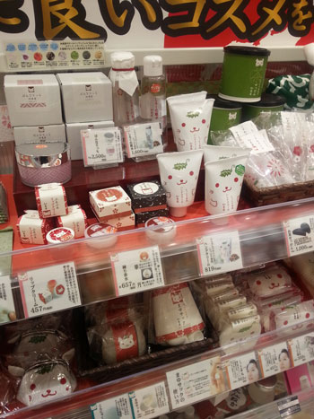
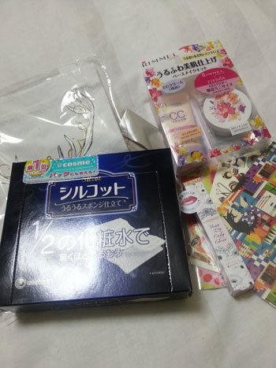
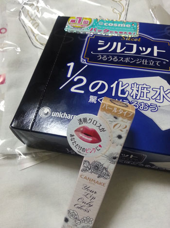
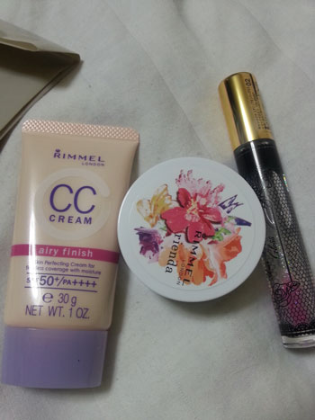

덥습니다 더워요 ;ㅂ;
오후 1-3시는 절대 밖에서 걸어다니고 싶지 않아요;;
밖에서 길을 걷다보면 내가 뭘 잘못했지? 뭘 잘못해서 이 고생을 하고있는거지?
라는 심각한 자기반성을 하게되는 날씨입니다 ㅋㅋㅋㅋ
하루에 아이스크림 세개까지 먹어봤어요;;; 으어;; 더워;;
하지만 그 와중에도
여전히 돌아댕기면서 이것저것 사모으고 있습니다 ^^;;

세일러문 아이라이너 깜장
딱히 엄청난 팬도 아닌데 굿즈가 나왔다니까 사야할거 같은
이 의무감 ^^;;;
저 장식이 달/해 두버젼이 있는데
둘중 뭘 사야할지 정말 심각하게 고민했습니다 ^^;;
내꺼랑 물괴기 언니거 하나씩 헷헷


이건 물괴기 언니 부탁으로 구입한
Claire's 시계반지
이게 영국브랜드 인데 도쿄에 가게가 엄청 많더라구용

이것도 귀엽당 :D

신주쿠 동쪽출구 나오면 바로 보이는 매장인데
패키지가 넘 귀여워서 한장
이날은 그냥 돌아왔지만 립밥을 하나 사봐야것어용
패키지 늠 귀여워 ;ㅂ;

시루콧토 화장솜
림멜 CC 크림 + 파우더
캔메이크 립글로스


시루콧토 화장솜은 확실히 적은양의 토너로도 충분히 닦아낼수 있어서 좋습니다 :)
림멜 CC 크림은 면세에서 산 맥 CC 크림 보라색이 내 피부를 전혀 커버 못하는거 같아서....OTL
+ 더운날씨에 맨날 얼굴 벌게져서 댕기다가 안되겠다 들고다닐수 있는 미니사이즈 파우더가 필요해!!
의 콤보로 구입했습니다 ^^
일케 두개해서 1300엔 :)
도쿄에 온이상 해외 브랜드 보다는 일본 화장품 브랜드만 구매하고 싶었는데
가격대비 사이즈 대비 이거닷 싶은걸 못찾았네용 :3
그 이전에 이니스프리 노세범 파우더 좋다던데 사올걸
왜 안사왔을까 음청 후회중입니다 ㅜㅜ
플러스 파우더가 왜 필요한지 덥고습한 여름을 체험하고 나서야
깨달음을 얻었습니다 ㅋㅋㅋㅋ
그전에 베어미네랄즈 파우더를 한번 쓸어주면
얼굴 반질반질해지는거에 느므 만족하면서 사용했었는데
오기 몇일전에 깨묵었어요........OTL 크흑흑 지금생각해도 눙물이 ㅜㅜ
+캔메이크 투명 립글로스 (펄타입)
@코스메 매장서 no1 스티커가 붙어있길래 호기심에 구입해봤습니다^^
사용감은 그냥저냥 보통이에용
글엄 또 열심히(?)
리스트에 있는거 클리어 하러 댕겨야겠어요 :)